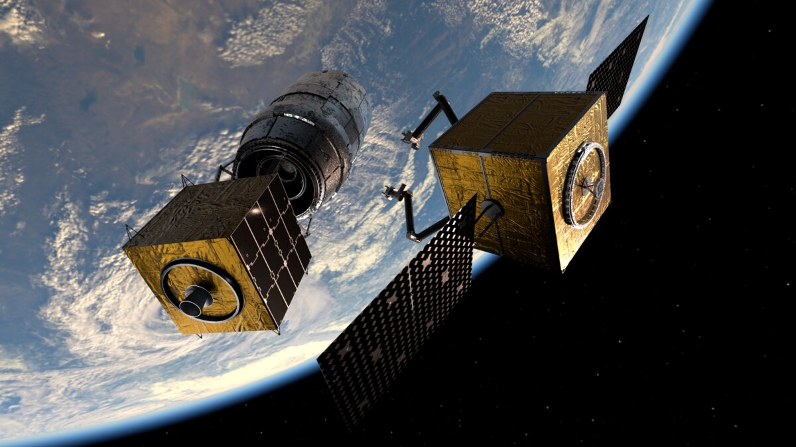

Sustainable space operations
Turn "expiration-date" satellites into inspectors with the sensors already on board, extend mission lifetimes through servicing, and make capture of debris and defunct hardware safe.
Access to servicing
Extended lifetime
Debris capture